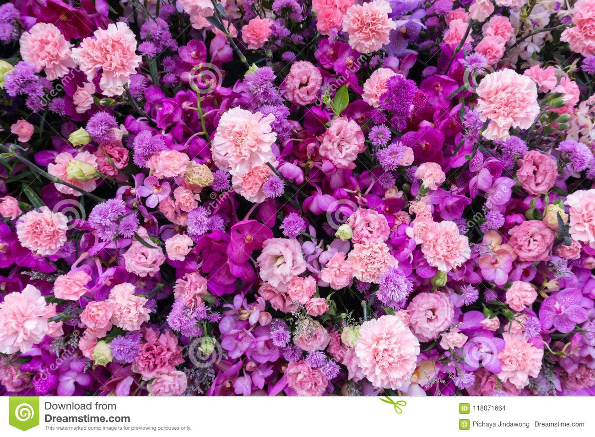

Purple flowers come in every shape and size, from tiny grape hyacinths to towering alliums and climbing clematis. But you just can’t beat purple pansies for their mood-boosting pop of purple, often with an eye-catching yellow center. Fill a pot with these striking purple beauties, the perfect spring plants, and they’ll bring a smile to any face that passes them by.Back to Home Page...
